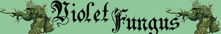

Corpo Non Direzionale;

|
|
Ambiente/Habitat | Caverne, Sotterranei |
| Frequenza | Non Comune | |
| Organizzazione | Solitario o Piccolo Gruppo | |
| Periodo di Attività | Qualsiasi | |
| Dieta | Carnivora | |
| Intelligenza | Non Intelligent (0) | |
| Punti Combattimento | Nessuno | |
| Tesoro | Nessuno | |
| Allineamento Dominante | Neutrale | |
| Numero di Apparizione | 1d20: (1-6) 1 (7-11) 2 (12-15) 3 (16-18) 4 (19-20) 5 | |
| Classe Armatura | 7 [10 base, 3 corazza] | |
| Movimento | 3 esagoni | |
| Dadi Vita | 5 | |
| Thac0 | Thac0 16 | |
| Numero di Attacchi | Tentacolo * 4 (fino a 6 metri) | |
| Danni | 1d6+1 (acido) * 4 | |
| Poteri Offensivi | Nessuno; | |
| Poteri Difensivi |
Resistenza
Straordinaria all'Acido; Corpo Non Direzionale; |
|
| Poteri Generici | Poteri dei Piantiformi; | |
| Vulnerabilità | Impossibilità di Caricare; | |
| Resistenza alla Magia | Nessuna | |
| Sensi | Senso Primordiale (24 metri) | |
| Dimensioni | Medium (1.80 m. di altezza) | |
| Morale | Fearless (20) | |
| Valore in Punti Esperienza | 486 |
|
TIRI SALVEZZA DELLA CREATURA |
|||||||
| CORAGGIO | ENERGIA VITALE | MAGIA | MALATTIA | MENTE | RIFLESSI | ROBUSTEZZA | VELENO |
| 0 | +10%* | 0 | Immunità Piante | Immunità Piante | -10% | 0 | Immunità Piante |
| 45 | 41 | 59 | 44 | 57 | 61 | 49 | 46 |
Descrizione
Questo fungo di dimensioni umane dal colore viola con macchie rosa ha quattro tentacoli simili a viticci che sporgono da sotto il cappello e si agitano minacciosamente. La parte inferiore del fungo è rappresentata da una piccola massa di appendici simili a radici tentacolari sulla quale la pianta si sposta.
Combat
Un fungo viola prova a colpire con i suoi tentacoli tutte le creature viventi che si trovano entro la sua portata.
RESISTENZA STRAORDINARIA ALL'ACIDO (Typical Ability): Il corpo della creatura è estremamente resistente all'acido. Qualsiasi attacco effettuato sulla creatura con l'acido o altra simile sostanza corrosiva produrrà solo il 25% (per difetto) di tutti i danni.
CORPO NON DIREZIONALE (Lesser Special Ability): La direzione di arrivo degli attacchi nei confronti della creatura è totalmente irrilevante. Il corpo della stessa, infatti, non ha una direzione frontale. La creatura combatte e si difende su tutti i lati intorno al suo corpo allo stesso modo. Tutti gli attacchi rivolti alla creatura, quindi, saranno considerati come attacchi frontali non subendo la stessa in alcun caso le penalità previste per gli attacchi alle spalle. Anche in caso di attacchi di opportunità, infatti, la creatura li riceverà senza che chi li effettua possa applicare i benefici previsti per gli attacchi alle spalle.
POTERI DEI PIANTIFORMI : In quanto creature piantiformi ottengono le seguenti caratteristiche degli esseri vegetali (link).
IMPOSSIBILITA' DI CARICARE (Lesser Special Vulnerability): Questa creatura non può in nessun caso operare una manovra di carica.
Habitat/Society
Questi funghi si aggirano nelle caverne e nei sotterranei umidi approfittando dei loro sensi primordiali per attaccare vittime che non se lo aspettano (ad esempio esseri che riposano o dormono).
Ecology
Un fungo manca di clorofilla, un vero gambo, radici o foglie . Incapace di operare la fotosintesi, sopravvive come parassita, consumando lentamente la materia organica.
Mystical Resource Sourge (Viticci Acidi) Quantità: 4, Presenza 10% - Effetto Particolare: Acido - Qualità della Risorsa: Common.